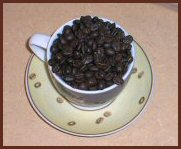

The Coffee Corner

The Life of a Coffee Bean
Did you ever wonder how your coffee went from plant to pot? Read on to answer this very question.
Terms to Know
Drupe: the fruit of the coffee plant which most often contains two coffee beans.1
Beans: the seeds of a coffee plant.1
Green drupes: drupes that are not yet ripe.2
Patios: large areas where coffee beans are dried by the sun.1
Planting
The coffee you drink every day begins as a bean taken from a very productive plant. This bean spends its first year in a nursery, and then moves to a plantation.1 After three or four years of cultivation, the coffee plant begins to flower.2 These flowers are fertilized, and it is then only a matter of time before the flowers are replaced with drupes. A mature coffee plant produces roughly two-thousand drupes every year! The drupes ripen after seven to eleven months, and change color from green to red.1
Harvesting
Now to get the drupes off the coffee plant. This can be done in one of three ways: picking, stripping, or mechanical harvesting. Picking involves choosing ripe drupes by hand. In stripping, all drupes are pulled from the coffee plant and fall onto sheets. Mechanical harvesters are machines that remove all the drupes, but leave the plant more or less unharmed.1 If not already separated, ripe drupes are removed from overripe and green drupes.2
Processing
Now we have drupes, but what we need for that glorious caffeinated creation is beans! In order to obtain the two beans inside the drupe, layers of tissue must be removed. There are two methods for this: the wet method and the dry method.1
Wet Method
Wet method produces coffee with a strong fragrance, a fine body, and an intense acidity. To obtain coffee beans using the wet method, drupes are put in a pulping machine.1 This machine pushes drupes against a screen only large enough for beans to fit through.2 Next, the beans are put into fermentation tanks where they receive enzymatic baths for up to two and a half days. This bath loosens any remaining pulp from the bean. Now beans can be dried on patios, where they dry for approximately two weeks.1
Dry Method
Dry method simply involves leaving drupes in the sun for a month, at most. Once dry, outer tissues can be shucked to obtain beans. Dry method produces heavy-bodied, flavorful coffee.1
Roasting
On to roasting, where things really heat up. Roasting gives different coffees their unique tastes.2 Beans are roasted in at temperatures of up to 550 degrees Fahrenheit. As the beans heat up, they change in color, getting browner the longer they spend roasting. The lightest roast, Cinnamon Roast, comes from beans that have spent the least amount of time in the heat. More time in the roaster produces other roasts: City Roast, Full City Roast, Vienna Roast, Italian Roast, and finally, French Roast. Once roasted, coffee is ready to be ground, packaged, and sold.1
Planting, harvesting, processing, and roasting coffee is a long process, but the end result is totally worth it. Let us tip our hats to those who cultivate this delightful beverage.
Sources:
1.
Gregory Dicum and Nina Luttinger, The Coffee Book Anatomy of an Industry from Crop to the Last Drop (New York: The New Press, 1999), 39-71.
2. Coffeeresearch.org, http://www.coffeeresearch.org/.
Last Updated: Monday, 27-Nov-2006 7:10 PM
|